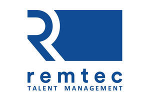

Trade Mark Journal No.2026/006 6 February 2026
UK00004328299 22 January 2026 (35,41)

- Class 35
- Human resources management and recruitment services; Human resources consultancy; Executive search and selection services; Recruitment consultancy services; Staff recruitment consultancy services; Professional recruitment services; Executive search and placement services; Recruitment services; Recruitment and personnel management services; Executive search services; Employment consultancy services; Consultancy and advisory services relating to personnel placement; Personal management consultancy services; Personnel management consultancy services; Executive recruitment services; Employment recruiting services; Consultancy relating to the selection of personnel; Management consultancy services; Consultancy and advisory services relating to personnel management; Executive selection services; Staff recruitment services; Corporate management consultancy services; Personnel management and employment consultancy; Human resources consultation; Professional staffing services; Recruitment services for sales and marketing personnel.
- Class 41
- Management training consultancy services; Consultancy services relating to the education and training of management and of personnel; Training services relating to management consultancy; Consultancy services relating to training; Management training services; Consultancy services relating to the development of training courses; Consultancy services relating to the training of employees; Business training consultancy services; Commercial training services; Education and training services in relation to business management; Sales training services; Training services related to business; Sales personnel training services.
Remtec Talent Management Ltd